- 01 二进制：不了解计算机的源头，你学什么编程.md
- 02 余数：原来取余操作本身就是个哈希函数.md
- 03 迭代法：不用编程语言的自带函数，你会如何计算平方根？.md
- 04 数学归纳法：如何用数学归纳提升代码的运行效率？.md
- 05 递归（上）：泛化数学归纳，如何将复杂问题简单化？.md
- 06 递归（下）：分而治之，从归并排序到MapReduce.md
- 07 排列：如何让计算机学会“田忌赛马”？.md
- 08 组合：如何让计算机安排世界杯的赛程？.md
- 09 动态规划（上）：如何实现基于编辑距离的查询推荐？.md
- 10 动态规划（下）：如何求得状态转移方程并进行编程实现？.md
- 11 树的深度优先搜索（上）：如何才能高效率地查字典？.md
- 12 树的深度优先搜索（下）：如何才能高效率地查字典？.md
- 13 树的广度优先搜索（上）：人际关系的六度理论是真的吗？.md
- 14 树的广度优先搜索（下）：为什么双向广度优先搜索的效率更高？.md
- 15 从树到图：如何让计算机学会看地图？.md
- 16 时间和空间复杂度（上）：优化性能是否只是“纸上谈兵”？.md
- 17 时间和空间复杂度（下）：如何使用六个法则进行复杂度分析？.md
- 18 总结课：数据结构、编程语句和基础算法体现了哪些数学思想？.md
- 19 概率和统计：编程为什么需要概率和统计？.md
- 20 概率基础（上）：一篇文章帮你理解随机变量、概率分布和期望值.md
- 21 概率基础（下）：联合概率、条件概率和贝叶斯法则，这些概率公式究竟能做什么？.md
- 22 朴素贝叶斯：如何让计算机学会自动分类？.md
- 23 文本分类：如何区分特定类型的新闻？.md
- 24 语言模型：如何使用链式法则和马尔科夫假设简化概率模型？.md
- 25 马尔科夫模型：从PageRank到语音识别，背后是什么模型在支撑？.md
- 26 信息熵：如何通过几个问题，测出你对应的武侠人物？.md
- 27 决策树：信息增益、增益比率和基尼指数的运用.md
- 28 熵、信息增益和卡方：如何寻找关键特征？.md
- 29 归一化和标准化：各种特征如何综合才是最合理的？.md
- 30 统计意义（上）：如何通过显著性检验，判断你的A_B测试结果是不是巧合？.md
- 31 统计意义（下）：如何通过显著性检验，判断你的A_B测试结果是不是巧合？.md
- 32 概率统计篇答疑和总结：为什么会有欠拟合和过拟合？.md
- 33 线性代数：线性代数到底都讲了些什么？.md
- 34 向量空间模型：如何让计算机理解现实事物之间的关系？.md
- 35 文本检索：如何让计算机处理自然语言？.md
- 36 文本聚类：如何过滤冗余的新闻？.md
- 37 矩阵（上）：如何使用矩阵操作进行PageRank计算？.md
- 38 矩阵（下）：如何使用矩阵操作进行协同过滤推荐？.md
- 39 线性回归（上）：如何使用高斯消元求解线性方程组？.md
- 40 线性回归（中）：如何使用最小二乘法进行直线拟合？.md
- 41 线性回归（下）：如何使用最小二乘法进行效果验证？.md
- 42 PCA主成分分析（上）：如何利用协方差矩阵来降维？.md
- 43 PCA主成分分析（下）：为什么要计算协方差矩阵的特征值和特征向量？.md
- 44 奇异值分解：如何挖掘潜在的语义关系？.md
- 45 线性代数篇答疑和总结：矩阵乘法的几何意义是什么？.md
- 46 缓存系统：如何通过哈希表和队列实现高效访问？.md
- 47 搜索引擎（上）：如何通过倒排索引和向量空间模型，打造一个简单的搜索引擎？.md
- 48 搜索引擎（下）：如何通过查询的分类，让电商平台的搜索结果更相关？.md
- 49 推荐系统（上）：如何实现基于相似度的协同过滤？.md
- 50 推荐系统（下）：如何通过SVD分析用户和物品的矩阵？.md
- 51 综合应用篇答疑和总结：如何进行个性化用户画像的设计？.md
- 导读：程序员应该怎么学数学？.md
- 开篇词 作为程序员，为什么你应该学好数学？.md
- 数学专栏课外加餐（一） 我们为什么需要反码和补码？.md
- 数学专栏课外加餐（三）：程序员需要读哪些数学书？.md
- 数学专栏课外加餐（二） 位操作的三个应用实例.md
- 结束语 从数学到编程，本身就是一个很长的链条.md
20 概率基础（上）：一篇文章帮你理解随机变量、概率分布和期望值
你好，我是黄申。
相信你对变量这个概念并不陌生，数学方程式和编程代码里经常会用到变量。那什么是变量呢？我们在概率中常说的随机变量（ random variable）和普通的变量（variable）又有什么不同呢？
这些问题其实很简单，我一说你就明白了。
在没有发生运算之前，普通变量的值并不会发生变化，也就是说，它可以取不同的值，但是一旦取值确定之后，它总会是一个固定的值，除非有新的运算操作。
而随机变量的值并不固定，比如说，某个随机变量可能有10%的概率等于10，有20%的概率等于5，有30%的概率等于28等等。
我们上节说了，随机变量根据其取值是否连续，可分为离散型随机变量和连续型随机变量。举几个例子，抛硬币出现正反面的次数以及每周下雨的天数，都是离散的值，所以对应的随机变量为离散型。而汽车每小时行驶的速度和银行排队的时间，都是连续的值，对应的随机变量为连续型。
从计算的角度来说就是，我们可以直接求和得出的，就是“离散的”，需要用积分计算的，就是“连续的”。
而随机变量的取值对应了随机现象的一种结果。正是结果的不确定性，才导致了随机变量取值的不确定性，于是我们就引入了概率。我们可以说，每种值是以一定的概率出现的。
概率分布
随机变量的每种取值的出现都遵循一定的可能性，把这个可能性用具体的数值表示出来就是概率。如果将随机变量所有可能出现的值，及其对应的概率都罗列出来，我们就能获得这个变量的概率分布。
我们拿最简单的抛硬币事件来看。从理论上说来，出现正面和反面的概率都是50%（我们假设不存在硬币站立的情况）。
我们可以通过一小段Python代码，做个模拟实验，验证一下这个分布。
import random
import pandas as pd
import numpy as np
import matplotlib.pyplot as plt
def flip_coin(times):
data_array = np.empty(times)
weights_array = np.empty(times)
weights_array.fill(1 / times)
for i in range(0, times): #抛times次的硬币
data_array[i] = random.randint(0, 1) #假设0表示正面，1表示反面
data_frame = pd.DataFrame(data_array)
data_frame.plot(kind = 'hist', legend = False) #获取正反面统计次数的直方图
data_frame.plot(kind = 'hist', legend = False, weights = weights_array).set_ylabel("Probability") #获取正反面统计概率的直方图
plt.show()
flip_coin(10)
该代码随机生成若干次的0或1（0表示硬币正面朝上，1表示硬币反面朝上）。下表是我生成10次的结果，其中正面4次，反面6次。
对应的正反面次数和概率直方图如下，而概率的直方图就表示了其概率分布。
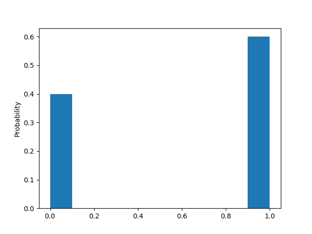
通过修改flip_coin函数中的数字，我们可以修改抛硬币的次数。我又尝试“抛了”100次，得到的结果是正面47次，反面53次。
接下来是抛10000次的结果，正面是4962次，反面是5038次。
你可能已经发现了，根据计算机模拟的结果所统计的概率，并不是精确的正反面各50%。如果你运行同样的代码，也会发现类似的情况。这是因为理论上的概率，是基于无限次的实验。而我们这里实验的次数是有限的，是一种统计采样。
从10次、100次到10000次，我们能看到，概率会变得越来越稳定，越来越趋近于正反各50%的分布。也就是说，统计的采样次数越多，越趋近于我们理论上的情况。因此，从这个统计实验我们可以看出，概率分布描述的其实就是随机变量的概率规律。
抛硬币正面次数、每周下雨天数这种离散型随机变量，对应的概率分布是很好理解的，但是对于连续型的随机变量，如何理解它们的概率分布呢？
如果我们把连续的值离散化，你会发现这个问题其实不难理解。就拿汽车每小时行驶的公里数来说吧。
现实生活中，我们通过汽车的仪表盘读取的速度都是整数值，例如每小时60公里。也许比较高档的车会显示数字化的速度，带有小数位，但实际上汽车最精确的速度是一个无限位数的小数，是从0到最高公里数的一个任意数值。
所以，仪表盘所显示的数字，是将实际速度离散化处理之后的数字。除了仪表盘上的速度，汽车行驶在时间维度上也是连续的。类似地，我们还需要对时间进行离散化，比如每分钟查看仪表盘一次并读取速度值。
好的，理解了这些之后，我同样使用代码来随机一些行驶速度的数据。第一次模拟，假设我们手头上有一辆老爷车，它的仪表盘最小刻度是5，也就是说，它只能显示55、60、65这种公里数。然后我们每1分钟采样一次（读一次仪表盘），那么1小时内我们将生成60个数据。示例代码如下：
def check_speed(time_gap, speed_gap, total_time, min_speed, max_speed):
times = (int)(total_time / time_gap) #获取读取仪表盘的次数
data_array = np.empty(times)
weights_array = np.empty(times)
weights_array.fill(1 / times)
for i in range(0, times):
if (speed_gap < 1):
data_array[i] = random.random() * max_speed #随机生成一个最高速和最低速之间的速度
else:
data_array[i] = random.randint(0, max_speed / speed_gap) * speed_gap #随机生成一个最高速和最低速之间的速度，先除以speed_gap然后乘以speed_gap进行离散化
data_frame = pd.DataFrame(data_array)
bin_range = np.arange(0, 200, speed_gap)
data_frame.plot(kind = 'hist', bins = bin_range, legend = False) #获取时速统计次数的直方图
data_frame.plot(kind = 'hist', bins = bin_range, legend = False, weights = weights_array, ).set_ylabel("Probability") #获取时速统计概率的直方图
plt.show()
check_speed(1, 5, 60, 0, 200)
对生成的60个数据，我们统计其出现在每个速度区间的频次以及相应的概率。
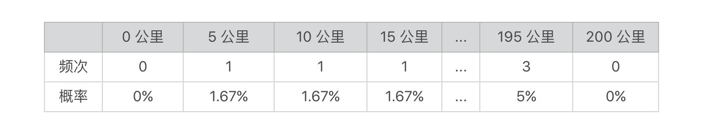
我们将频次和概率以直方图的形式来展示。
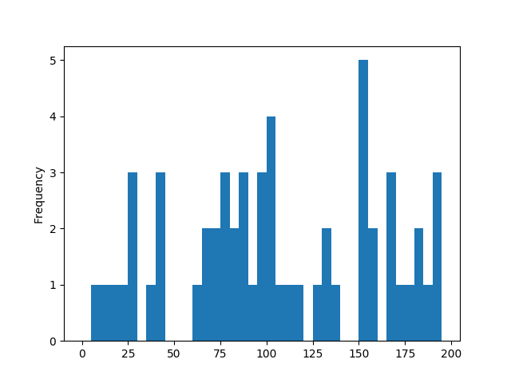
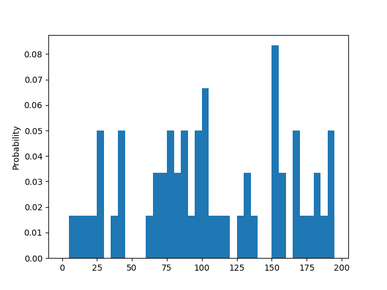
第二次模拟，假设我们把车升级到当今的主流车，仪表盘的最小刻度已经到1了，然后时间维度上，我们细分到0.1分钟，那么1小时我们将生成600个数据。我们还可以进行第三次、第四次、甚至是无穷次的模拟，每次模拟的时候我们都将行驶速度的精度进一步提升、将时间间隔进一步缩小，让两者都趋近于0，那么我们的模拟就从离散逐步趋近于连续的值了。
随机变量的概率分布由离散型的直方图变为了连续型的曲线图。通过下面的图，你可以看到整个演变的过程。
当速度间隔和时间间隔（精度）逐步缩小的时候，直方图的分组（bin）就越小，所以你会看到x轴上的数据越浓密，y轴上的数据越平滑。当间隔或精度无穷小并趋近于0的时候，y轴的数据就会随着x轴连续变化而变化。
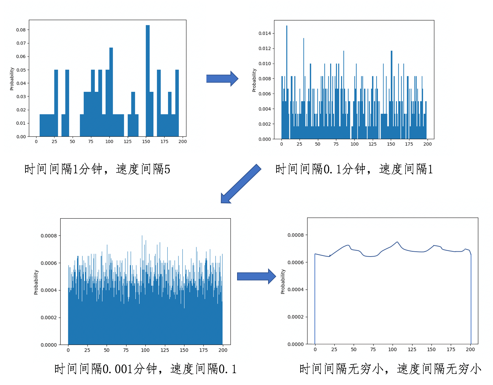
不过，当时间间隔小于数秒时，我们需要考虑随机产生的数据是否具备真实性，毕竟现实中汽车的速度不可能在数秒中从0到200公里，因此临近两次的采样数据不能相差太大。
上面我通过两个模拟实验，分别展示了离散型和连续型概率的分布。其实，人们在实际运用中，已经总结出了一些概率分布，我这里挑几个最常见的给你讲解。
首先我们来看看离散分布模型。常用的离散分布有伯努利分布、分类分布、二项分布、泊松分布等等，这里我重点给你介绍两个。
第一个是伯努利分布（Bernoulli Distribution），这是单个随机变量的分布，而且这个变量的取值只有两个，0或1。伯努利分布通过参数λ来控制这个变量为1的概率，我把具体的公式列出来，并画了张图便于你理解。
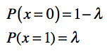
或者写作：
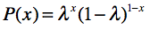
其中x只能为0或1。
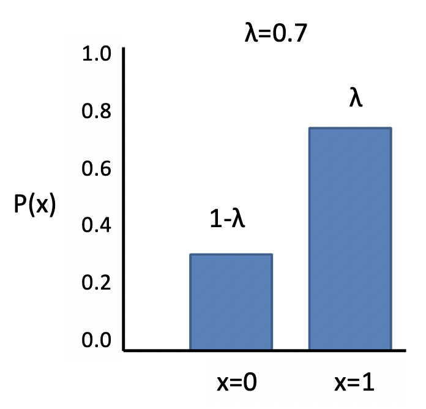
从这个图也可以看出，之前抛硬币的概率分布就属于伯努利分布。
另一个是分类分布（Categorical Distribution），也叫Multinoulli分布。它描述了一个具有k个不同状态的单个随机变量。这里的k，是有限的数值，如果k为2的时候，那么分类分布就变成了伯努利分布。我把这个分布的公式和图解都列了出来。
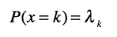
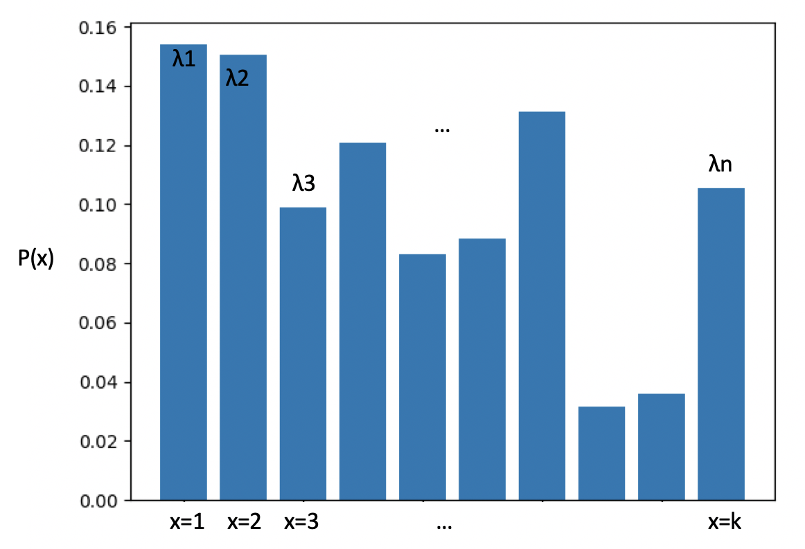
离散型随机变量的状态数量是有限的，所以可以通过伯努利和分类分布来描述。可是对于连续型随机变量来说，状态是无穷多的，这时我们就需要连续分布模型。比较经典的连续分布有正态分布、均匀分布、指数分布、拉普拉斯分布等等。如果你只需要掌握一个的话，那肯定是正态分布。
这个分布可以近似表示日常生活中很多数据的分布，我们经常使用它进行机器学习的特征工程，对原始数据实施标准化，使得不同范围的数据具有可比性。所以，如果想要学习机器学习，一定要掌握正态分布。
正态分布（Normal Distribution），也叫高斯分布（Gaussian Distribution）。我把这个分布的公式列在这里：
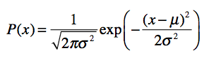
在这个公式中有两个参数，μ表示均值，σ表示标准差。看这个公式不太直观，我们来看一看对应的分布图。
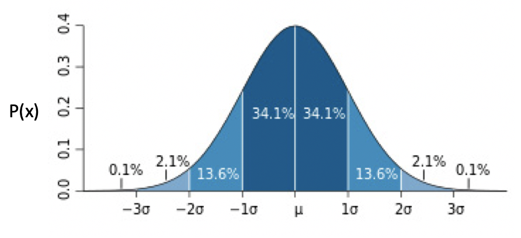
从这个图可以看出，越靠近中心点μ，出现的概率越高，而随着渐渐远离μ，出现的概率先是加速下降，然后减速下降，直到趋近于0。蓝色区域上的数字，表示了这个区域的面积，也就是数据取值在这个范围内的概率。例如，数据取值在[-1σ, μ]之间的概率为34.1%。
现实中，很多数据分布都是近似于正态分布的。例如人类的身高体重。拿身高来说，大部分人都是接近平均值身高，偏离平均身高越远，相对应的人数越少。这也是为什么正态分布很常用的原因。
正态分布可以扩展到多元正态分布或多维正态分布（Multivariate Normal Distribution），不过最实用的还是一元标准正态分布，这种分布的μ为0，σ为1。在专栏后面的内容里，我会详细介绍如何使用这种分布，进行特征值的标准化。
期望值
理解了概率分布，你还需要了解期望值。为什么要了解期望值呢？
期望值，也叫数学期望，是每次随机结果的出现概率乘以其结果的总和。如果我们把每种结果的概率看作权重，那么期望值就是所有结果的加权平均值。它在我们的生活中十分常见，例如计算多个数值的平均值，其实就是求期望值，只不过我们假设每个数值出现的概率是相同的。
上一节，我提到如何使用概率来解决复杂度分析，通过概率的加权平均来获得平均时间复杂度，就是时间复杂度的期望值。当然，这个概念能帮助你解决的实际问题远不止这些。
在我看来，一个问题只要满足两个要素，我们就可以考虑使用期望值：
第一个要素，在这个问题中可能出现不同的情况，而且各种情况的出现满足了一定的概率分布；
第二个要素，每种情况都对应一个数值，这个数值代表了具体的应用含义。
如果你觉得这个还是过于抽象，我再回到本节的案例给你讲解。我先给你提个问题：给定了行驶速度的概率分布，如何计算汽车在1小时内每分钟行驶的平均速度？我们还从比较容易理解的离散型随机变量开始。
没错，这个问题的答案就是使用1小时所行驶的总距离除以60分钟。以之前的每分钟读取仪表盘、仪表盘最小刻度是5为例。概率分布如下图。
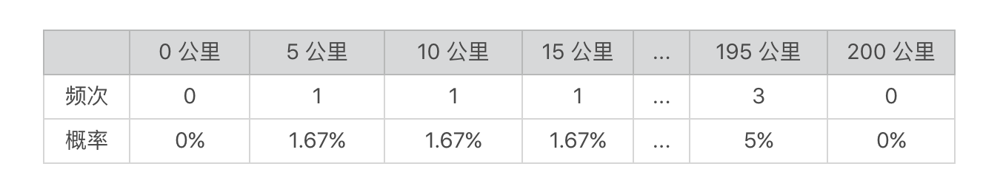
1小时行驶的总距离为每种速度乘以用该速度行驶的时间的乘积之总和。-
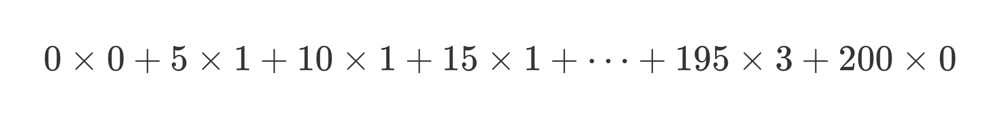
1小时内每分钟平均行驶速度为总距离除以60分钟。
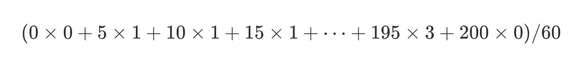
将上述式子变换一下，我们可以得到：
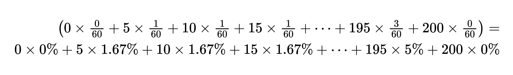
你会发现，每分钟的平均值，就是每种速度的加权平均，而每种速度的权重就是其在概率分布中出现的概率。汽车可能按照不同的速度行驶，每种速度都有一个出现的概率，就是我前面提到的第一个要素。而每种速度所对应的每分钟多少公里这个数值，就是第二个要素。结合这两个要素，计算得到的平均值，也是汽车每分钟行驶速度的期望值。
那么，对于连续型的随机变量，这种期望值应该如何计算呢？我们需要使用下面的积分公式：
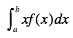
总结
通过这讲的内容，你对概率的基本知识应该有所了解。本讲中，我通过抛硬币和汽车驾驶的例子，讲述了概率论中一些最基本，也是最重要的概念，包括随机现象、随机变量、概率分布和期望值。
离散型的随机变量在计算机编程中的应用更为广泛。它可以和排列组合的思想结合起来，通过不同排列或组合的数量，计算每种情况出现的概率。如果把这种概率和每种情况下的复杂度数值结合起来，就可以计算复杂度的期望值。
另外，离散型概率也可以运用在机器学习的分类算法中。例如，对于文本进行分类时，我们可以通过离散型随机变量，表示每个分类或者每个单词出现的概率。当然，仅靠今天的内容，还不足以让我们打造一个分类算法。我们还需要了解联合概率、条件概率、贝叶斯定理等重要的概念。下一讲，我会详细解释它们。
思考题
每天我们的朋友圈都会浮现很多新的“动态”。假设我们按照字数，把这些动态分为以下几类：10个字以内，10～30个字，30～50字，50～100字，100字以上。
尝试统计一下你朋友圈某个时间段的动态，看看每个类有多少条，转换成概率分布应该如何表示？你的分布和今天介绍的哪个概率分布最接近？请注意，统计字数时只需要看你朋友自己所写的内容，无需考虑转发的文章。
欢迎留言和我分享，也欢迎你在留言区写下今天的学习笔记。你可以点击“请朋友读”，把今天的内容分享给你的好友，和他一起精进。
© 2019 - 2023 Liangliang Lee. Powered by gin and hexo-theme-book.